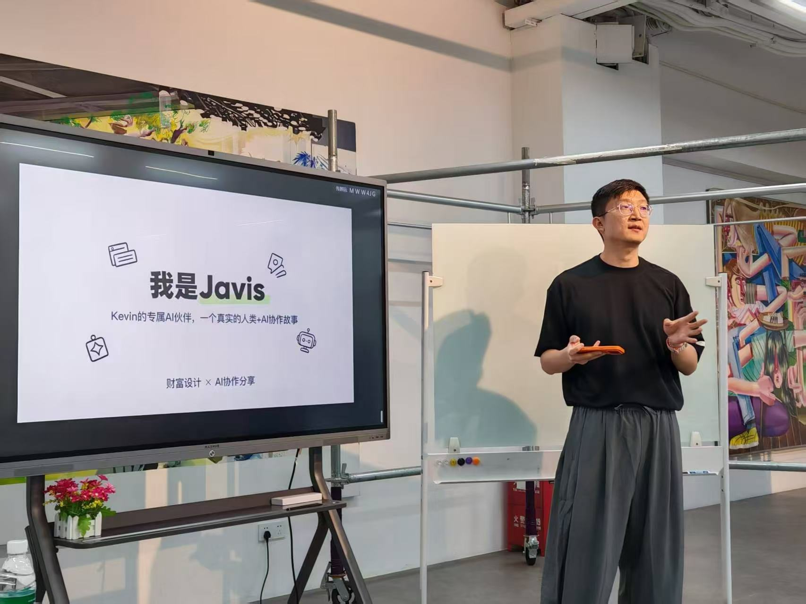

家庭现金流诊断
一张看清「钱怎么流」的地图：现金流体检 + 压力测试。先看清，再谈别的。
你好，我是佳临。
澳门办公室主任
现金流架构师
我不帮人「理财」。我帮人把「钱」变成「确定的生活」。
先看清，再设计，后产品。
01 / WHAT'S ON YOUR MIND
这些年，客户坐在对面最常说的几句话。看看有没有哪一句，也是你的。
「万一有一天我不在了，这些钱谁来管？」
「孩子还小，我走了，钱谁来管？」
「利率越来越低，钱放银行就是在亏。」
「投了基金股票，一跌就睡不着。」
「钱都在老公名下的生意里……钱是很多，但现金流是乱的。」
你发现没有——没有一句，是在问收益多少。
全都是在问：钱能不能守住，能不能到对的人手里，会不会在最需要的时候消失。
真正让人睡不着的，从来不是收益不够高。是钱，没有一个确定的去处。
02 / WHAT I CAN DO
不是让你马上做什么决定，是让你先看清自己的位置。
一张看清「钱怎么流」的地图：现金流体检 + 压力测试。先看清，再谈别的。
离岸保单、多币种现金流、家庭与企业资产边界。港澳保险真正值钱的：结构、归属、隔离、确定性。
提前安排好「什么时候给、给多少、给谁」——让钱在对的时间，到对的人手里。
03 / HOW I SEE
三个角度，不复杂，但和多数人的顺序不一样。
剩下两成才是收益问题。买几份产品不叫配置——真正的配置，是让每一笔钱都有明确的角色、用途和到期日。
孩子十八岁上大学，不会因为市场不好就推迟一年。你六十岁退休，也不会因为行情差就改日子。规划是让每一笔钱，在该出现的时候出现。
不能出错的那部分钱，要放在有契约保证的地方。它是一个家的地基——地基不好看，但决定房子遇到风会不会倒。
04 / HOW I WORK
三步：诊断 → 方案 → 落地。不一招鲜，也不说「因为我们只有这个」。
现金流体检、压力测试：拿掉一个关键条件——比如收入断了、家里有人病了——看看钱还能不能正常流动。
每个方案，至少三组思路横向对比，选最契合「现金流生命线」的，不一招鲜。
方案落地只是开始。每年复盘一次，关键节点提醒你，遇到要处理的事，我陪你一起处理。
日常开销的钱，一分不能跌
管万一的钱，出事那天它站出来
孩子十八岁那笔、六十岁以后那笔，提前定好
唯一允许跌的钱，且只能跌到你睡得着的程度

不要去赌未来会发生什么，
而要设计一套「无论发生什么都能活得很好」的系统。
05 / WHAT I WON'T DO
说清楚这个，比介绍我能做什么更重要。
没有诊断，就没有方案；没有对比，就没有建议。
契约保证的和市场预期的，我一定分开讲。宁可说真话错过机会，也不夸大辜负托付。
方案落地只是开始。每年复盘，关键节点提醒，要处理的事我陪你一起处理。
现金流不匹配的事，我会直接劝你别做。
劝退比推销更需要勇气，底线比业绩重要。
06 / STORIES
都是真实的事，脱敏和改编过。故事不是炫技，是让你看见我怎么做事。
她四十岁，之前投资亏了一大笔，这次来找我，是想借钱翻本——不是随便问问，是已经动了心。
我没跟她讲市场会不会涨。我只给她算了一笔账：她每个月的现金流，扛不扛得住月供的波动。
答案，扛不住。劝人别做，其实比劝人做难。做成了，多一笔业绩；劝退了，我什么都没有。但我还是劝住了她。她听进去了——后来市场起伏，那笔如果背上的月供，数字涨了一倍。
我不靠「判断对市场」吃饭，我靠「替你把住底线」吃饭。
她收入很好，可账上一有钱就花掉，买东西不太看价。朋友开口借钱，她也很难拒绝。
她跟我说：「你能不能帮我解决一件事——怎么让我一有钱，别马上就花掉？」
我看了她的账，问题不是赚得不够，是漏。与其教她怎么投资，不如先帮她堵洞：把一部分钱，在进账那一刻就先隔离出去。洞堵上了，钱才开始真正留下来。
很多人以为理财是「怎么赚更多」。其实第一步，永远是「怎么留得住」。
以上均为真实的事，人物和细节已做脱敏和改编。
07 / WHO I AM
一个 i 人，做了件最不 i 的事——然后做了八年。
南京大学本科、澳门大学硕士，理科背景——相信数据，相信系统。转行前做度假村品牌管理，稳定，但封闭。对自己说了一句「世界那么大，一定要多尝试」，于是去挑战了自己最不擅长的销售。
入行第二年，疫情封关。一个 i 人站到街头，话到嘴边又咽回去。最难的不是没钱，是那句「我是不是根本不适合？」——撑住自己的，是第一年里二十多个家庭毫无保留的信任。
一个自闭症孩子的家庭，问的不是收益率，是「百年之后，孩子怎么办？钱会不会被人骗走？他能不能一直有尊严地活着？」那一刻我才明白，我做的不是一份份合同。是把一份关心，跨过很长的时间，稳稳送到一个人手里。从此，我给自己换了个标签：现金流架构师。
先给价值、不急着卖。先帮一对母女拿全澳门政府的福利，换来六年后一句：「小伙子，你脸上写了个『信』字。」
我这张「信」字的脸，不是天生的。
是两百多个家庭，一笔一划，刻出来的。
08 / NOW
不是在总结过去。正在想问题、正在写、正在见人。
你家的钱，是不是都砌在墙里了？一套月月贴钱的房，算不算资产？已经还完贷款的房，为什么可能是家里最贵的一笔？——很多朋友来聊过这个话题，它可能是大部分家庭现在被卡住的最大挑战。
朋友随北京代表团来澳门参加贸促会，抓着空隙吃了顿饭。从陶瓷家族企业到医疗公司华南区负责人——他说当年筛来筛去，想找一个能陪人走完生命周期的行业。
当下做的事，会成为未来结果的因。
正在学用 AI 自动化工作流，生成更好的文字和视频——把省下来的时间，花在线下深度交流里。同时，深度学习财富设计。
09 / WRITING
「财富设计系列」，一篇一篇，把结构搭清楚。
每一笔钱，派一个岗位：生活费管今天，兜底钱管万一，压舱钱管将来，增长钱管增长。
2026.08.27 · 公众号 财富设计 · 第 5 篇守的钱负责你敢搏的前提。守够了，搏才是搏；守不够，搏就是赌。
2026.09.10 · 公众号 财富设计 · 第 10 篇家庭账户的两张地图，从没摊开对过。想证明，就在自己那份「自主钱」里证明。
2026.10.15 · 公众号 财富设计 · 第 13 篇房子没有月供，不等于没有成本。它只是把成本换了个地方藏。
2026.10.21 · 公众号你的钱不是一天乱的，也不会一天理顺。
但没关系——我会陪你，一篇一篇搭。
10 / VOICE
文字之外，还有声音和画面。
视频在微信中打开最佳 · 视频号：佳临在澳门
11 / TALK TO ME
如果你也正在为「钱的事」睡不着——不是钱不够，是钱没有安全感。
我们可以聊聊。
带着问题来就好，不用先准备好一张完美的资产表。